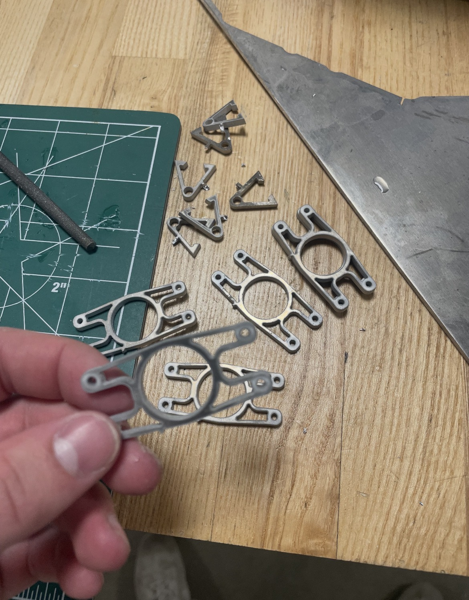
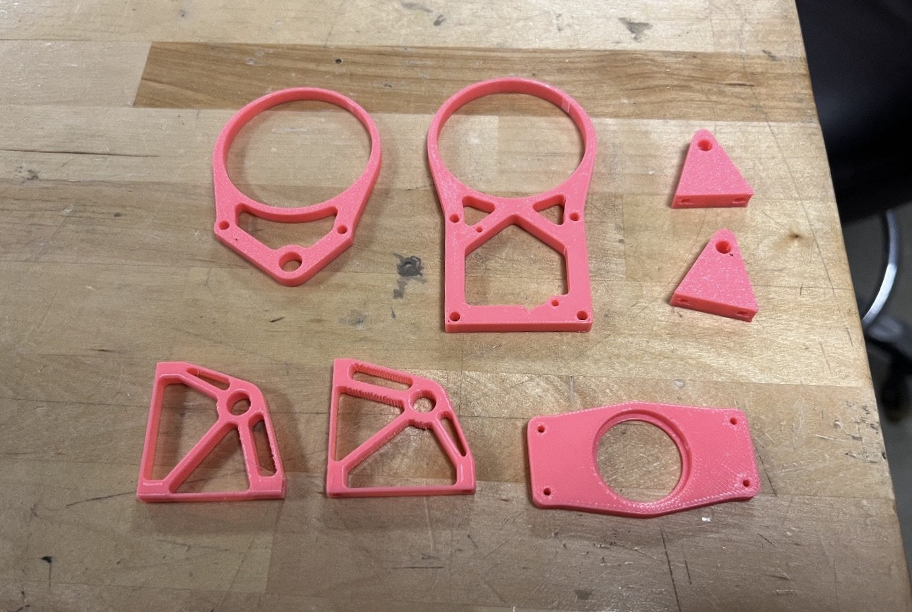
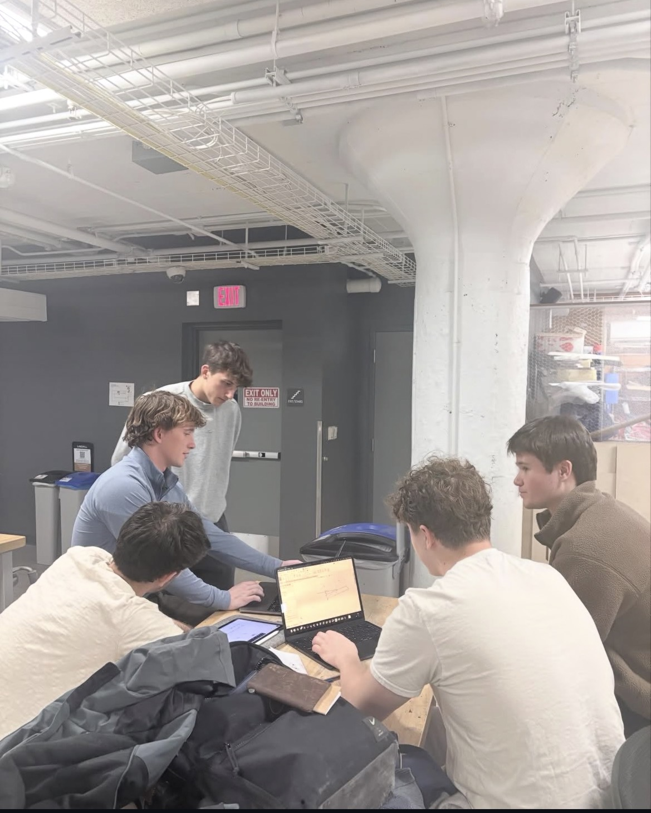

Project Overview
As a member of the Vertical Take-Off and Landing (VTOL) Club at Case Western Reserve University, I'm collaborating with a 50+ person multidisciplinary team to design and build autonomous and non-autonomous drones for the Design Build Vertical Flight Competition. Within a small subteam, I assisted the design and development of a retractable landing gear system intended to improve aerodynamics and extend battery life.
Engineering Process
Concept & Trade Studies: Applied Pugh Decision Matrices to evaluate existing landing gear and retraction mechanism concepts against efficiency, reliability, and budget constraints, narrowing our options before committing to a direction.
Design & Analysis: Modeled the retractable gear assembly in SolidWorks and used FEA simulation to evaluate structural performance under landing loads, iterating on geometry to optimize the strength-to-weight ratio without compromising stowed position aerodynamics.
Prototyping & Sourcing: Sourced actuation and structural components within budget constraints, then executed iterative CAD revisions and manufacturing to bring the mechanism from concept to a working prototype.
Results
The retractable landing gear prototype functions and offers a more aerodynamic position compared with fixed landing gear. Work continues with the broader VTOL team toward integration and flight testing ahead of future competitions.




Key Takeaways
Working within a large, multidisciplinary student team improved how I decide a subsystem design against constraints set by other subteams: power budget, airframe geometry, and competition rules all shaped the landing gear design before a single part was modeled. Using a Pugh Matrix up front saved real rework later by eliminating flawed early retraction concepts before any parts were ordered, saving money and time.
The project is ongoing. Next milestones: integrate the mechanism into the airframe and validate reliability ahead of the Design Build Vertical Flight Competition.